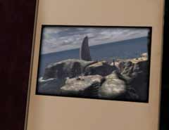

| 概要 | 用語集 | 地図 |
| 淡いヒント集 | ヒント集 | 的確なヒント集 |
| 攻略最短ルート |
| 時代選択へ戻る |
Tomahna
| オープニング アトラスの書斎へ行く(入り口は下の画像参照)  レリーシャンの書を見つける(下の画像を参照) (サーヴェドロ登場) ジェナーニンへ接続する(接続書は下の画像を参照)  |
| 時代選択へ戻る |
| 概要 | 用語集 | 地図 |
| 淡いヒント集 | ヒント集 | 的確なヒント集 |
| 攻略最短ルート |
Myst III Exile
| 目次へ戻る | ページの上部へ |